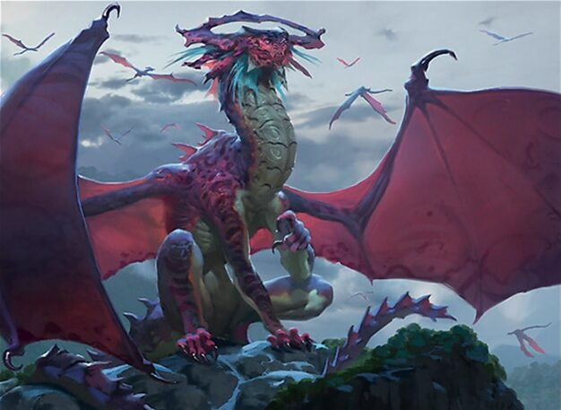

Which commanders win most often on your budget?
64 popular commanders per price class, each built as a budget deck and continuously tested against each other in Forge – with decklist, statistics and a Cardmarket shopping list.
See the rankings Find your commanderTest your own deckAll 5 free slots taken · supporters still get in
So far 35,999 games in 230 tournaments with 448 decks. Latest tournament: – the site updates automatically afterwards.
Your favourites
Which commander suits you?
Three questions – we show the strongest matching decks from our tests.
Your top 3
Loading …
Rankings
The most successful decks up to €100 in the Forge simulation (Bracket 3: at most 3 Game Changers).
 Illustration: Eric Deschamps · © Wizards of the Coast
Illustration: Eric Deschamps · © Wizards of the CoastOloro, Ageless Ascetic
 Illustration: Joshua Raphael · © Wizards of the Coast
Illustration: Joshua Raphael · © Wizards of the CoastKuja, Genome Sorcerer
 Illustration: Mark Winters · © Wizards of the Coast
Illustration: Mark Winters · © Wizards of the CoastNekusar, the Mindrazer
Rankings up to €100
from 52 tournaments The Ur-DragonElo 1679
The Ur-DragonElo 1679 Miirym, Sentinel WyrmElo 1670
Miirym, Sentinel WyrmElo 1670 Y'shtola, Night's BlessedElo 1666
Y'shtola, Night's BlessedElo 1666 Kaalia of the VastElo 1645
Kaalia of the VastElo 1645 Sephiroth, Fabled SOLDIER // Sephiroth, One-Winged AngelElo 1642
Sephiroth, Fabled SOLDIER // Sephiroth, One-Winged AngelElo 1642 Arcades, the StrategistElo 1617
Arcades, the StrategistElo 1617 Bello, Bard of the BramblesElo 1615
Bello, Bard of the BramblesElo 1615 Jodah, the UnifierElo 1615
Jodah, the UnifierElo 1615 Valgavoth, Harrower of SoulsElo 1612
Valgavoth, Harrower of SoulsElo 1612 Edgar MarkovElo 1610
Edgar MarkovElo 1610 Ashling, the LimitlessElo 1609
Ashling, the LimitlessElo 1609 Pantlaza, Sun-FavoredElo 1603
Pantlaza, Sun-FavoredElo 1603 Ygra, Eater of AllElo 1595
Ygra, Eater of AllElo 1595 Korvold, Fae-Cursed KingElo 1578
Korvold, Fae-Cursed KingElo 1578 Hakbal of the Surging SoulElo 1573
Hakbal of the Surging SoulElo 1573 Teysa KarlovElo 1568
Teysa KarlovElo 1568 Rin and Seri, InseparableElo 1561
Rin and Seri, InseparableElo 1561 Zhulodok, Void GorgerElo 1546
Zhulodok, Void GorgerElo 1546 Atla Palani, Nest TenderElo 1544
Atla Palani, Nest TenderElo 1544 Lathril, Blade of the ElvesElo 1542
Lathril, Blade of the ElvesElo 1542 The Wise MothmanElo 1536
The Wise MothmanElo 1536 Muldrotha, the GravetideElo 1536
Muldrotha, the GravetideElo 1536 Hearthhull, the WorldseedElo 1531
Hearthhull, the WorldseedElo 1531 Wilhelt, the RotcleaverElo 1523
Wilhelt, the RotcleaverElo 1523 Ulalek, Fused AtrocityElo 1516
Ulalek, Fused AtrocityElo 1516 Zurgo StormrenderElo 1505
Zurgo StormrenderElo 1505 Felothar the SteadfastElo 1499
Felothar the SteadfastElo 1499 Chatterfang, Squirrel GeneralElo 1479
Chatterfang, Squirrel GeneralElo 1479 Kefka, Court Mage // Kefka, Ruler of RuinElo 1478
Kefka, Court Mage // Kefka, Ruler of RuinElo 1478 Caesar, Legion's EmperorElo 1471
Caesar, Legion's EmperorElo 1471 Teval, the Balanced ScaleElo 1469
Teval, the Balanced ScaleElo 1469 Vivi OrnitierElo 1460
Vivi OrnitierElo 1460 Baylen, the HaymakerElo 1450
Baylen, the HaymakerElo 1450 The Wandering MinstrelElo 1444
The Wandering MinstrelElo 1444 Cloud, Ex-SOLDIERElo 1442
Cloud, Ex-SOLDIERElo 1442 Aragorn, the UniterElo 1436
Aragorn, the UniterElo 1436 Tidus, Yuna's GuardianElo 1435
Tidus, Yuna's GuardianElo 1435 Yuriko, the Tiger's ShadowElo 1425
Yuriko, the Tiger's ShadowElo 1425 Isshin, Two Heavens as OneElo 1420
Isshin, Two Heavens as OneElo 1420 Ms. BumbleflowerElo 1419
Ms. BumbleflowerElo 1419 Meren of Clan Nel TothElo 1417
Meren of Clan Nel TothElo 1417 Maralen, Fae AscendantElo 1399
Maralen, Fae AscendantElo 1399 Frodo, Adventurous Hobbit // Sam, Loyal AttendantElo 1374
Frodo, Adventurous Hobbit // Sam, Loyal AttendantElo 1374 Esika, God of the Tree // The Prismatic BridgeElo 1359
Esika, God of the Tree // The Prismatic BridgeElo 1359 Animar, Soul of ElementsElo 1355
Animar, Soul of ElementsElo 1355 The NecrobloomElo 1348
The NecrobloomElo 1348 Mr. House, President and CEOElo 1346
Mr. House, President and CEOElo 1346 Hashaton, Scarab's FistElo 1342
Hashaton, Scarab's FistElo 1342 Sauron, the Dark LordElo 1329
Sauron, the Dark LordElo 1329 Krenko, Mob BossElo 1311
Krenko, Mob BossElo 1311 Kenrith, the Returned KingElo 1308
Kenrith, the Returned KingElo 1308How to read the numbers
Tier S–D: how strong the deck is compared with the others in this budget – S is the top 10%, A to 30%, B the midfield, C to 90%, D the rest.
Win rate: how many games the deck won. Four players sit at the table – 25% is normal. Green = better, red = worse.
Trend: ▲ rising, ▼ falling since the last tournament.
Sorted by Elo like in chess: wins against strong opponents count more. Elo, form and games are on every deck page.
| # | Commander | Tier | Win rate | Trend | Price |
|---|---|---|---|---|---|
| 1 | | S | 53.5% | ▲ | €96.81 |
| 2 | BurnSpellslingerWizards | S | 41.4% | ▲ | €94.97 |
| 3 | Nekusar, the Mindrazer ⚠ 7AI note: the Forge AI can't play 7 cards and plays 6 only partially – result somewhat less meaningful. Forge can’t play (replaced in the test)
€97.44 | S | 37.3% | – | €97.44 |
| 4 |  | S | 41.5% | ▼ | €98.99 |
| 5 |  | S | 45.6% | ▼ | €98.97 |
| 6 |  | S | 33.5% | ▲ | €99.17 |
| 7 | | A | 36.9% | ▲ | €96.29 |
| 8 | | A | 33.7% | ▼ | €98.63 |
| 9 | ControlSpellslingerLifegain | A | 38.7% | ▼ | €89.13 |
| 10 | | A | 37.9% | ▲ | €94.12 |
| 11 | AristocratsSacrificeCombo | A | 35.2% | ▼ | €97.47 |
| 12 | | A | 28.3% | ▼ | €94.15 |
| 13 | EnchantressArtifactsUnnatural | A | 29.6% | ▲ | €97.02 |
| 14 | | A | 28.7% | ▼ | €92.89 |
| 15 | Group SlugBurn | A | 38.3% | ▼ | €99.81 |
| 16 | | A | 33.9% | ▲ | €99.77 |
| 17 | | A | 23.6% | ▲ | €93.35 |
| 18 | | A | 29.5% | ▲ | €99.74 |
| 19 | | A | 32.3% | ▲ | €99.49 |
| 20 | Korvold, Fae-Cursed King ⚠ 8AI note: the Forge AI can't play 8 cards and plays 3 only partially – result somewhat less meaningful. Forge can’t play (replaced in the test)
€98.22 | A | 26.4% | ▲ | €98.22 |
| 21 | +1/+1 CountersMerfolkExplore | B | 29.3% | ▲ | €97.93 |
| 22 | | B | 28.4% | ▼ | €94.87 |
| 23 | CatsTokensDogs | B | 25.4% | ▼ | €99.98 |
| 24 | Zhulodok, Void Gorger ⚠ 6AI note: the Forge AI can't play 6 cards and plays 12 only partially – result much less meaningful. Forge can’t play (replaced in the test)
€99.60 | B | 26.8% | ▼ | €99.60 |
| 25 | | B | 27% | – | €95.78 |
| 26 | ElvesTokens | B | 23.9% | ▼ | €99.38 |
| 27 | | B | 26.5% | ▲ | €95.66 |
| 28 | | B | 22.3% | ▲ | €95.20 |
| 29 | Hearthhull, the Worldseed ⚠ 7AI note: the Forge AI can't play 7 cards and plays 3 only partially – result somewhat less meaningful. Forge can’t play (replaced in the test)
€95.25 | B | 23% | ▲ | €95.25 |
| 30 | | B | 20.2% | ▼ | €98.37 |
| 31 | | B | 24.5% | ▲ | €99.11 |
| 32 | | B | 23.1% | ▼ | €91.46 |
| 33 | | B | 28.3% | ▼ | €95.06 |
| 34 | TokensAristocratsSquirrels | B | 25.9% | ▲ | €98.29 |
| 35 | DiscardComboControl | B | 23.3% | ▼ | €96.86 |
| 36 | | B | 21.8% | ▼ | €93.27 |
| 37 | ReanimatorLands MatterMill | B | 25.8% | ▼ | €99.38 |
| 38 | | B | 21.6% | ▲ | €99.81 |
| 39 | | B | 19.1% | ▼ | €99.99 |
| 40 | | B | 25.2% | ▼ | €92.44 |
| 41 | | B | 19.2% | ▲ | €95.28 |
| 42 | | B | 19.3% | ▲ | €90.91 |
| 43 | | B | 19.6% | ▲ | €99.46 |
| 44 | NinjutsuNinjasAggro | B | 18.9% | ▲ | €99.76 |
| 45 | AggroTokensAttack Triggers | C | 22% | ▲ | €96.87 |
| 46 | | C | 21.1% | ▲ | €89.65 |
| 47 | | C | 25% | ▼ | €99.98 |
| 48 | | C | 20.2% | ▼ | €97.84 |
| 49 | LifegainTokensFood | C | 17% | ▼ | €99.47 |
| 50 | PlaneswalkersLegendsGods | C | 15.6% | ▼ | €98.11 |
| 51 | | C | 18.7% | ▼ | €98.19 |
| 52 | | C | 17.3% | ▼ | €99.43 |
| 53 | TreasureTokensArtifacts | C | 14.9% | ▼ | €99.22 |
| 54 | | C | 16% | ▲ | €98.74 |
| 55 | AlliesEarthbendingAirbending | C | 15.8% | ▲ | €99.98 |
| 56 | | C | 18.6% | ▼ | €99.49 |
| 57 | | C | 17.3% | ▲ | €96.41 |
| 58 | Kenrith, the Returned King ⚠ 5AI note: the Forge AI can't play 5 cards and plays 6 only partially – result somewhat less meaningful. Forge can’t play (replaced in the test)
€97.07 | C | 10.5% | ▼ | €97.07 |
| 59 |  Flubs, the Fool ⚠ 8AI note: the Forge AI can't play 8 cards and plays 5 only partially – result somewhat less meaningful. Forge can’t play (replaced in the test)
€96.28 | D | 11.8% | ▼ | €96.28 |
| 60 |  | D | 10.9% | ▲ | €98.67 |
| 61 |  | D | 8% | ▲ | €99.55 |
| 62 | Lands MatterArtifacts+1/+1 Counters | D | 7.6% | ▲ | €99.87 |
| 63 |  | D | 10.4% | ▼ | €97.97 |
| 64 |  Kinnan, Bonder Prodigy ⚠ 8AI note: the Forge AI can't play 8 cards and plays 5 only partially – result somewhat less meaningful. Forge can’t play (replaced in the test)
€99.99 | D | 4.9% | ▼ | €99.99 |
- Reign of Dragons – Elo 1560, win rate 28% in 200 games, would be rank 24
- Turtle Power! – Elo 1558, win rate 28% in 200 games, would be rank 24
- Avengers Assemble – Elo 1551, win rate 25% in 200 games, would be rank 24
- Doom Prevails – Elo 1509, win rate 25% in 200 games, would be rank 32
No longer in the field (dropped out of the EDHREC top, so not ranked): Gishath, Sun's Avatar (Elo 1684, 318 games), Tom Bombadil (Elo 1502, 384 games), Arabella, Abandoned Doll (Elo 1466, 216 games)
The most successful decks up to €200 in the Forge simulation (Bracket 3: at most 3 Game Changers).
Illustration: Eric Deschamps · © Wizards of the CoastOloro, Ageless Ascetic
Illustration: Mark Winters · © Wizards of the CoastNekusar, the Mindrazer
Illustration: Kai Carpenter · © Wizards of the CoastGiada, Font of Hope
Rankings up to €200
from 52 tournamentsY'shtola, Night's BlessedElo 1669Miirym, Sentinel WyrmElo 1664Sephiroth, Fabled SOLDIER // Sephiroth, One-Winged AngelElo 1657Edgar MarkovElo 1639The Ur-DragonElo 1629Bello, Bard of the BramblesElo 1615Valgavoth, Harrower of SoulsElo 1606Atla Palani, Nest TenderElo 1601Kuja, Genome Sorcerer // Trance Kuja, Fate DefiedElo 1600Teysa KarlovElo 1597Pantlaza, Sun-FavoredElo 1594Jodah, the UnifierElo 1576Hakbal of the Surging SoulElo 1564The Wise MothmanElo 1560Ygra, Eater of AllElo 1558Ashling, the LimitlessElo 1548Korvold, Fae-Cursed KingElo 1543Arcades, the StrategistElo 1541Rin and Seri, InseparableElo 1539Zhulodok, Void GorgerElo 1533Zurgo StormrenderElo 1530Ulalek, Fused AtrocityElo 1529Meren of Clan Nel TothElo 1525Teval, the Balanced ScaleElo 1498Hearthhull, the WorldseedElo 1497Ms. BumbleflowerElo 1484Muldrotha, the GravetideElo 1481Lathril, Blade of the ElvesElo 1475Baylen, the HaymakerElo 1475Felothar the SteadfastElo 1461Yuriko, the Tiger's ShadowElo 1459Caesar, Legion's EmperorElo 1454Animar, Soul of ElementsElo 1450Vivi OrnitierElo 1433Aragorn, the UniterElo 1430Maralen, Fae AscendantElo 1425Wilhelt, the RotcleaverElo 1415Isshin, Two Heavens as OneElo 1412Kefka, Court Mage // Kefka, Ruler of RuinElo 1407Esika, God of the Tree // The Prismatic BridgeElo 1407Chatterfang, Squirrel GeneralElo 1403The Wandering MinstrelElo 1394The NecrobloomElo 1390Cloud, Ex-SOLDIERElo 1385Sauron, the Dark LordElo 1378Hashaton, Scarab's FistElo 1364Mr. House, President and CEOElo 1361Tidus, Yuna's GuardianElo 1351Krenko, Mob BossElo 1334Glarb, Calamity's AugurElo 1333Flubs, the FoolElo 1315Frodo, Adventurous Hobbit // Sam, Loyal AttendantElo 1313How to read the numbers
Tier S–D: how strong the deck is compared with the others in this budget – S is the top 10%, A to 30%, B the midfield, C to 90%, D the rest.
Win rate: how many games the deck won. Four players sit at the table – 25% is normal. Green = better, red = worse.
Trend: ▲ rising, ▼ falling since the last tournament.
Sorted by Elo like in chess: wins against strong opponents count more. Elo, form and games are on every deck page.
| # | Commander | Tier | Win rate | Trend | Price |
|---|---|---|---|---|---|
| 1 | | S | 50.9% | ▲ | €187.90 |
| 2 | Nekusar, the Mindrazer ⚠ 7AI note: the Forge AI can't play 7 cards and plays 6 only partially – result somewhat less meaningful. Forge can’t play (replaced in the test)
€193.47 | S | 43.4% | ▲ | €193.47 |
| 3 | | S | 42.9% | ▲ | €199.48 |
| 4 | | S | 40.8% | ▲ | €187.72 |
| 5 | | S | 44.1% | ▲ | €193.04 |
| 6 | | S | 33.1% | ▼ | €191.06 |
| 7 | | A | 38.6% | ▼ | €186.94 |
| 8 | | A | 33.7% | ▲ | €197.05 |
| 9 | Sephiroth, Fabled SOLDIER // Sephiroth, One-Winged Angel ⚠ 7AI note: the Forge AI can't play 7 cards and plays 2 only partially – result somewhat less meaningful. Forge can’t play (replaced in the test)
€200.00 | A | 37.1% | ▼ | €200.00 |
| 10 | | A | 35.6% | ▼ | €196.53 |
| 11 | | A | 36.9% | ▼ | €194.37 |
| 12 | | A | 29.2% | ▼ | €183.07 |
| 13 | | A | 37.1% | ▼ | €192.07 |
| 14 | Atla Palani, Nest Tender ⚠ 8AI note: the Forge AI can't play 8 cards and plays 1 only partially – result somewhat less meaningful. Forge can’t play (replaced in the test)
€196.42 | A | 30.3% | ▲ | €196.42 |
| 15 | BurnSpellslingerWizards | A | 36.4% | ▼ | €192.51 |
| 16 | | A | 26.6% | ▲ | €199.05 |
| 17 | | A | 31.6% | ▼ | €196.31 |
| 18 | | A | 21.6% | ▼ | €184.77 |
| 19 | | A | 29% | ▼ | €174.75 |
| 20 | | B | 27.3% | ▲ | €173.23 |
| 21 | | B | 27.3% | ▲ | €199.00 |
| 22 | | B | 24.4% | ▲ | €184.28 |
| 23 | | B | 26.8% | ▲ | €190.84 |
| 24 | | B | 26.4% | ▲ | €183.35 |
| 25 | | B | 26% | ▲ | €191.69 |
| 26 | Zhulodok, Void Gorger ⚠ 6AI note: the Forge AI can't play 6 cards and plays 13 only partially – result much less meaningful. Forge can’t play (replaced in the test)
€199.99 | B | 29.3% | ▼ | €199.99 |
| 27 | | B | 22.8% | ▲ | €183.30 |
| 28 | | B | 26.2% | ▼ | €192.85 |
| 29 | | B | 25.3% | ▲ | €192.77 |
| 30 | | B | 22.5% | ▼ | €198.62 |
| 31 | | B | 23.9% | ▼ | €175.13 |
| 32 | | B | 19.8% | ▲ | €193.67 |
| 33 | | B | 22.8% | ▲ | €186.57 |
| 34 | Lathril, Blade of the Elves ⚠ 5AI note: the Forge AI can't play 5 cards and plays 8 only partially – result somewhat less meaningful. Forge can’t play (replaced in the test)
€196.22 | B | 24.6% | ▲ | €196.22 |
| 35 | | B | 21.6% | ▲ | €198.86 |
| 36 | | B | 23% | ▲ | €192.88 |
| 37 | | B | 19.3% | ▲ | €198.49 |
| 38 | | B | 20.8% | ▲ | €181.05 |
| 39 | | B | 21.3% | ▼ | €194.07 |
| 40 | Vivi Ornitier ⚠ 7AI note: the Forge AI can't play 7 cards and plays 3 only partially – result somewhat less meaningful. Forge can’t play (replaced in the test)
€197.63 | B | 19.1% | ▼ | €197.63 |
| 41 | | B | 21% | ▼ | €186.41 |
| 42 | | B | 18% | ▼ | €195.02 |
| 43 | Wilhelt, the Rotcleaver ⚠ 3AI note: the Forge AI can't play 3 cards and plays 10 only partially – result somewhat less meaningful. Forge can’t play (replaced in the test)
€192.01 | B | 20.8% | ▲ | €192.01 |
| 44 | | B | 22.9% | ▼ | €186.05 |
| 45 | Kefka, Court Mage // Kefka, Ruler of Ruin ⚠ 9AI note: the Forge AI can't play 9 cards and plays 5 only partially – result somewhat less meaningful. Forge can’t play (replaced in the test)
€197.85 | C | 21.4% | ▼ | €197.85 |
| 46 | PlaneswalkersLegendsGods | C | 19.2% | ▼ | €192.88 |
| 47 | TokensAristocratsSquirrels | C | 21.3% | ▼ | €190.88 |
| 48 | | C | 21% | ▼ | €192.57 |
| 49 | | C | 15.1% | ▼ | €193.44 |
| 50 | | C | 18.6% | ▲ | €195.79 |
| 51 | | C | 18.2% | ▲ | €194.44 |
| 52 | Hashaton, Scarab's Fist ⚠ 5AI note: the Forge AI can't play 5 cards and plays 6 only partially – result somewhat less meaningful. Forge can’t play (replaced in the test)
€199.01 | C | 18.2% | ▼ | €199.01 |
| 53 | | C | 16.6% | ▼ | €198.82 |
| 54 | | C | 16.2% | ▼ | €197.81 |
| 55 | | C | 14.8% | ▲ | €197.61 |
| 56 | Glarb, Calamity's Augur ⚠ 9AI note: the Forge AI can't play 9 cards and plays 5 only partially – result somewhat less meaningful. Forge can’t play (replaced in the test)
€183.84 | C | 12.1% | ▲ | €183.84 |
| 57 | Flubs, the Fool ⚠ 8AI note: the Forge AI can't play 8 cards and plays 4 only partially – result somewhat less meaningful. Forge can’t play (replaced in the test)
€193.18 | C | 13% | ▼ | €193.18 |
| 58 | LifegainTokensFood | C | 14.6% | ▼ | €191.55 |
| 59 | | D | 10.2% | ▼ | €197.74 |
| 60 | Kinnan, Bonder Prodigy ⚠ 8AI note: the Forge AI can't play 8 cards and plays 6 only partially – result somewhat less meaningful. Forge can’t play (replaced in the test)
€199.99 | D | 10% | ▼ | €199.99 |
| 61 |  | D | 10.4% | ▲ | €194.09 |
| 62 | | D | 12.5% | ▼ | €192.12 |
| 63 | AlliesEarthbendingAirbending | D | 10.7% | ▼ | €199.73 |
| 64 | | D | 9.5% | ▲ | €195.28 |
- Reign of Dragons – Elo 1597, win rate 25% in 190 games, would be rank 17
- Doom Prevails – Elo 1555, win rate 25% in 190 games, would be rank 22
- Turtle Power! – Elo 1536, win rate 26% in 190 games, would be rank 26
- Avengers Assemble – Elo 1515, win rate 29% in 190 games, would be rank 30
No longer in the field (dropped out of the EDHREC top, so not ranked): Gishath, Sun's Avatar (Elo 1713, 300 games), Tom Bombadil (Elo 1565, 360 games), Arabella, Abandoned Doll (Elo 1512, 165 games)
The most successful decks up to €300 in the Forge simulation (Bracket 3: at most 3 Game Changers).
Illustration: Eric Deschamps · © Wizards of the CoastOloro, Ageless Ascetic
Illustration: Mark Winters · © Wizards of the CoastNekusar, the Mindrazer
Illustration: Valera Lutfullina · © Wizards of the CoastUreni of the Unwritten
Rankings up to €300
from 30 tournamentsGiada, Font of HopeElo 1698Kaalia of the VastElo 1687Pantlaza, Sun-FavoredElo 1677Zhulodok, Void GorgerElo 1648Kuja, Genome Sorcerer // Trance Kuja, Fate DefiedElo 1641Miirym, Sentinel WyrmElo 1641Sephiroth, Fabled SOLDIER // Sephiroth, One-Winged AngelElo 1638Y'shtola, Night's BlessedElo 1627Atraxa, Praetors' VoiceElo 1619Ygra, Eater of AllElo 1613The Wise MothmanElo 1600Hakbal of the Surging SoulElo 1577Lathril, Blade of the ElvesElo 1567Ulalek, Fused AtrocityElo 1562Jodah, the UnifierElo 1559Arcades, the StrategistElo 1555Bello, Bard of the BramblesElo 1551Aragorn, the UniterElo 1535 Terra, Herald of HopeElo 1533Teval, the Balanced ScaleElo 1529Caesar, Legion's EmperorElo 1528Korvold, Fae-Cursed KingElo 1525Meren of Clan Nel TothElo 1519Rin and Seri, InseparableElo 1509Esika, God of the Tree // The Prismatic BridgeElo 1490Zurgo StormrenderElo 1485Isshin, Two Heavens as OneElo 1475Felothar the SteadfastElo 1471Baylen, the HaymakerElo 1466Animar, Soul of ElementsElo 1461Wilhelt, the RotcleaverElo 1461Ashling, the LimitlessElo 1457Vivi OrnitierElo 1456Teysa KarlovElo 1454Yuriko, the Tiger's ShadowElo 1450Muldrotha, the GravetideElo 1435The Wandering MinstrelElo 1427Frodo, Adventurous Hobbit // Sam, Loyal AttendantElo 1427Hearthhull, the WorldseedElo 1421Tidus, Yuna's GuardianElo 1417Cloud, Ex-SOLDIERElo 1409Mr. House, President and CEOElo 1387Chatterfang, Squirrel GeneralElo 1379Ms. BumbleflowerElo 1362Hashaton, Scarab's FistElo 1350Krenko, Mob BossElo 1343Kefka, Court Mage // Kefka, Ruler of RuinElo 1340Sauron, the Dark LordElo 1328Maralen, Fae AscendantElo 1314Kenrith, the Returned KingElo 1302Kinnan, Bonder ProdigyElo 1294
Terra, Herald of HopeElo 1533Teval, the Balanced ScaleElo 1529Caesar, Legion's EmperorElo 1528Korvold, Fae-Cursed KingElo 1525Meren of Clan Nel TothElo 1519Rin and Seri, InseparableElo 1509Esika, God of the Tree // The Prismatic BridgeElo 1490Zurgo StormrenderElo 1485Isshin, Two Heavens as OneElo 1475Felothar the SteadfastElo 1471Baylen, the HaymakerElo 1466Animar, Soul of ElementsElo 1461Wilhelt, the RotcleaverElo 1461Ashling, the LimitlessElo 1457Vivi OrnitierElo 1456Teysa KarlovElo 1454Yuriko, the Tiger's ShadowElo 1450Muldrotha, the GravetideElo 1435The Wandering MinstrelElo 1427Frodo, Adventurous Hobbit // Sam, Loyal AttendantElo 1427Hearthhull, the WorldseedElo 1421Tidus, Yuna's GuardianElo 1417Cloud, Ex-SOLDIERElo 1409Mr. House, President and CEOElo 1387Chatterfang, Squirrel GeneralElo 1379Ms. BumbleflowerElo 1362Hashaton, Scarab's FistElo 1350Krenko, Mob BossElo 1343Kefka, Court Mage // Kefka, Ruler of RuinElo 1340Sauron, the Dark LordElo 1328Maralen, Fae AscendantElo 1314Kenrith, the Returned KingElo 1302Kinnan, Bonder ProdigyElo 1294How to read the numbers
Tier S–D: how strong the deck is compared with the others in this budget – S is the top 10%, A to 30%, B the midfield, C to 90%, D the rest.
Win rate: how many games the deck won. Four players sit at the table – 25% is normal. Green = better, red = worse.
Trend: ▲ rising, ▼ falling since the last tournament.
Sorted by Elo like in chess: wins against strong opponents count more. Elo, form and games are on every deck page.
| # | Commander | Tier | Win rate | Trend | Price |
|---|---|---|---|---|---|
| 1 | | S | 52.8% | ▲ | €300.00 |
| 2 | Nekusar, the Mindrazer ⚠ 8AI note: the Forge AI can't play 8 cards and plays 6 only partially – result somewhat less meaningful. Forge can’t play (replaced in the test)
€276.21 | S | 41.2% | ▲ | €276.21 |
| 3 | | S | 43% | ▼ | €288.72 |
| 4 | | S | 38% | ▲ | €299.35 |
| 5 | | S | 38.8% | ▲ | €294.46 |
| 6 | | S | 38.7% | ▼ | €293.16 |
| 7 | | A | 38% | ▼ | €287.24 |
| 8 | | A | 34% | ▼ | €287.94 |
| 9 | | A | 31.8% | ▲ | €298.71 |
| 10 | Zhulodok, Void Gorger ⚠ 6AI note: the Forge AI can't play 6 cards and plays 13 only partially – result much less meaningful. Forge can’t play (replaced in the test)
€300.00 | A | 31.6% | ▼ | €300.00 |
| 11 | BurnSpellslingerWizards | A | 33.7% | ▼ | €290.97 |
| 12 | | A | 31.8% | ▲ | €291.06 |
| 13 | Sephiroth, Fabled SOLDIER // Sephiroth, One-Winged Angel ⚠ 7AI note: the Forge AI can't play 7 cards and plays 3 only partially – result somewhat less meaningful. Forge can’t play (replaced in the test)
€295.99 | A | 33.7% | ▼ | €295.99 |
| 14 | | A | 32.2% | ▼ | €291.93 |
| 15 | | A | 32.9% | ▲ | €292.12 |
| 16 | | A | 27.8% | ▼ | €291.00 |
| 17 | | A | 30.7% | ▼ | €272.35 |
| 18 | | A | 27.7% | ▲ | €278.99 |
| 19 | | A | 26.3% | ▼ | €299.39 |
| 20 | | B | 27.8% | ▼ | €297.88 |
| 21 | | B | 26.5% | ▲ | €294.24 |
| 22 | | B | 25.6% | ▲ | €267.83 |
| 23 | | B | 26.2% | ▼ | €276.70 |
| 24 | | B | 22.3% | ▼ | €283.46 |
| 25 | | B | 30% | ▲ | €230.36 |
| 26 | | B | 24.3% | ▲ | €290.08 |
| 27 | | B | 25.5% | ▼ | €291.44 |
| 28 | Korvold, Fae-Cursed King ⚠ 8AI note: the Forge AI can't play 8 cards and plays 4 only partially – result somewhat less meaningful. Forge can’t play (replaced in the test)
€298.82 | B | 23.8% | ▼ | €298.82 |
| 29 | | B | 25.2% | ▼ | €282.25 |
| 30 | | B | 24.1% | ▼ | €299.79 |
| 31 | PlaneswalkersLegendsGods | B | 24.1% | ▲ | €279.77 |
| 32 | | B | 22.4% | ▼ | €295.29 |
| 33 | | B | 26.3% | ▼ | €286.25 |
| 34 | | B | 23.2% | ▼ | €212.96 |
| 35 | | B | 22.7% | ▲ | €296.03 |
| 36 | | B | 23.7% | ▲ | €292.51 |
| 37 | Wilhelt, the Rotcleaver ⚠ 3AI note: the Forge AI can't play 3 cards and plays 10 only partially – result somewhat less meaningful. Forge can’t play (replaced in the test)
€277.72 | B | 22.7% | ▲ | €277.72 |
| 38 | | B | 21.6% | ▼ | €287.71 |
| 39 | | B | 22.1% | ▼ | €294.19 |
| 40 | | B | 23% | ▼ | €273.97 |
| 41 | | B | 20.3% | ▲ | €295.17 |
| 42 | Muldrotha, the Gravetide ⚠ 4AI note: the Forge AI can't play 4 cards and plays 9 only partially – result somewhat less meaningful. Forge can’t play (replaced in the test)
€290.25 | B | 20.6% | ▲ | €290.25 |
| 43 | | B | 25.6% | ▲ | €277.23 |
| 44 | LifegainTokensFood | B | 21.4% | ▲ | €281.61 |
| 45 | | C | 23.9% | ▲ | €234.19 |
| 46 | | C | 21.1% | ▲ | €286.11 |
| 47 | | C | 20.2% | ▼ | €284.76 |
| 48 | | C | 19.3% | ▼ | €293.90 |
| 49 | TokensAristocratsSquirrels | C | 19.6% | ▲ | €298.34 |
| 50 | | C | 20.2% | ▼ | €295.54 |
| 51 | | C | 18% | ▲ | €295.96 |
| 52 | Krenko, Mob Boss ⚠ 4AI note: the Forge AI can't play 4 cards and plays 9 only partially – result somewhat less meaningful. Forge can’t play (replaced in the test)
€297.50 | C | 19% | ▼ | €297.50 |
| 53 | Kefka, Court Mage // Kefka, Ruler of Ruin ⚠ 8AI note: the Forge AI can't play 8 cards and plays 6 only partially – result somewhat less meaningful. Forge can’t play (replaced in the test)
€295.98 | C | 19.4% | ▼ | €295.98 |
| 54 | | C | 19.8% | ▼ | €298.00 |
| 55 | AlliesEarthbendingAirbending | C | 14.7% | ▼ | €299.55 |
| 56 | | C | 14.5% | ▼ | €295.83 |
| 57 | | C | 13% | ▲ | €299.96 |
| 58 | Kinnan, Bonder Prodigy ⚠ 9AI note: the Forge AI can't play 9 cards and plays 7 only partially – result much less meaningful. Forge can’t play (replaced in the test)
€300.00 | C | 13.1% | ▲ | €300.00 |
| 59 | | D | 12.3% | ▼ | €299.80 |
| 60 | | D | 13.3% | ▼ | €275.54 |
| 61 | Flubs, the Fool ⚠ 8AI note: the Forge AI can't play 8 cards and plays 4 only partially – result somewhat less meaningful. Forge can’t play (replaced in the test)
€297.47 | D | 9.5% | ▼ | €297.47 |
| 62 | Glarb, Calamity's Augur ⚠ 7AI note: the Forge AI can't play 7 cards and plays 5 only partially – result somewhat less meaningful. Forge can’t play (replaced in the test)
€273.26 | D | 11% | ▼ | €273.26 |
| 63 | | D | 9.9% | ▲ | €290.03 |
| 64 | | D | 7.9% | – | €288.46 |
- Reign of Dragons – Elo 1604, win rate 23% in 160 games, would be rank 17
- Avengers Assemble – Elo 1526, win rate 26% in 160 games, would be rank 28
- Turtle Power! – Elo 1510, win rate 28% in 160 games, would be rank 30
- Doom Prevails – Elo 1474, win rate 23% in 160 games, would be rank 34
No longer in the field (dropped out of the EDHREC top, so not ranked): Gishath, Sun's Avatar (Elo 1765, 101 games), Atla Palani, Nest Tender (Elo 1576, 288 games), Tom Bombadil (Elo 1503, 179 games)
The most successful decks up to €400 in the Forge simulation (Bracket 3: at most 3 Game Changers).
Illustration: Eric Deschamps · © Wizards of the CoastOloro, Ageless Ascetic
Illustration: Valera Lutfullina · © Wizards of the CoastUreni of the Unwritten
Illustration: Victor Adame Minguez · © Wizards of the CoastAtraxa, Praetors' Voice
Rankings up to €400
from 25 tournamentsSephiroth, Fabled SOLDIER // Sephiroth, One-Winged AngelElo 1673Valgavoth, Harrower of SoulsElo 1664Zhulodok, Void GorgerElo 1662Giada, Font of HopeElo 1657The Ur-DragonElo 1654Kuja, Genome Sorcerer // Trance Kuja, Fate DefiedElo 1647Ygra, Eater of AllElo 1646Kaalia of the VastElo 1645Hakbal of the Surging SoulElo 1641Pantlaza, Sun-FavoredElo 1640Lathril, Blade of the ElvesElo 1630The Wise MothmanElo 1611Ulalek, Fused AtrocityElo 1607Meren of Clan Nel TothElo 1606Miirym, Sentinel WyrmElo 1594Arcades, the StrategistElo 1567Bello, Bard of the BramblesElo 1552Atla Palani, Nest TenderElo 1543Teysa KarlovElo 1541Hearthhull, the WorldseedElo 1535Rin and Seri, InseparableElo 1533Zurgo StormrenderElo 1528Jodah, the UnifierElo 1521Teval, the Balanced ScaleElo 1510Isshin, Two Heavens as OneElo 1500Chatterfang, Squirrel GeneralElo 1494Caesar, Legion's EmperorElo 1481Baylen, the HaymakerElo 1474Vivi OrnitierElo 1472Ashling, the LimitlessElo 1471Aragorn, the UniterElo 1468Animar, Soul of ElementsElo 1463Felothar the SteadfastElo 1447The Wandering MinstrelElo 1441Cloud, Ex-SOLDIERElo 1424Ms. BumbleflowerElo 1423Krenko, Mob BossElo 1420Wilhelt, the RotcleaverElo 1420Korvold, Fae-Cursed KingElo 1414Frodo, Adventurous Hobbit // Sam, Loyal AttendantElo 1413Muldrotha, the GravetideElo 1406Tidus, Yuna's GuardianElo 1404Sauron, the Dark LordElo 1394Yuriko, the Tiger's ShadowElo 1372The NecrobloomElo 1367Kinnan, Bonder ProdigyElo 1347Kefka, Court Mage // Kefka, Ruler of RuinElo 1346Kenrith, the Returned KingElo 1340Esika, God of the Tree // The Prismatic BridgeElo 1339Mr. House, President and CEOElo 1321Hashaton, Scarab's FistElo 1316Maralen, Fae AscendantElo 1307How to read the numbers
Tier S–D: how strong the deck is compared with the others in this budget – S is the top 10%, A to 30%, B the midfield, C to 90%, D the rest.
Win rate: how many games the deck won. Four players sit at the table – 25% is normal. Green = better, red = worse.
Trend: ▲ rising, ▼ falling since the last tournament.
Sorted by Elo like in chess: wins against strong opponents count more. Elo, form and games are on every deck page.
| # | Commander | Tier | Win rate | Trend | Price |
|---|---|---|---|---|---|
| 1 | | S | 55.7% | ▼ | €386.00 |
| 2 | | S | 42.3% | ▼ | €382.67 |
| 3 | | S | 32.8% | ▲ | €389.57 |
| 4 | Nekusar, the Mindrazer ⚠ 8AI note: the Forge AI can't play 8 cards and plays 6 only partially – result somewhat less meaningful. Forge can’t play (replaced in the test)
€358.11 | S | 38.4% | ▲ | €358.11 |
| 5 | | S | 35.1% | ▲ | €395.60 |
| 6 | | S | 34.5% | ▼ | €387.86 |
| 7 | AristocratsSacrificeCombo | A | 32.8% | ▼ | €398.10 |
| 8 | | A | 37.2% | ▲ | €385.73 |
| 9 | Zhulodok, Void Gorger ⚠ 5AI note: the Forge AI can't play 5 cards and plays 14 only partially – result much less meaningful. Forge can’t play (replaced in the test)
€397.16 | A | 29.5% | ▲ | €397.16 |
| 10 | | A | 36.6% | ▼ | €388.45 |
| 11 | | A | 31.7% | ▼ | €394.63 |
| 12 | BurnSpellslingerWizards | A | 33.5% | ▲ | €392.84 |
| 13 | Ygra, Eater of All ⚠ 4AI note: the Forge AI can't play 4 cards and plays 8 only partially – result somewhat less meaningful. Forge can’t play (replaced in the test)
€388.38 | A | 27.3% | ▼ | €388.38 |
| 14 | | A | 31.7% | ▲ | €384.03 |
| 15 | | A | 28% | ▲ | €349.34 |
| 16 | | A | 32.1% | ▼ | €397.93 |
| 17 | Lathril, Blade of the Elves ⚠ 3AI note: the Forge AI can't play 3 cards and plays 10 only partially – result somewhat less meaningful. Forge can’t play (replaced in the test)
€386.35 | A | 28.6% | ▼ | €386.35 |
| 18 | | A | 28% | ▲ | €374.17 |
| 19 | | A | 28.4% | ▲ | €399.13 |
| 20 | Meren of Clan Nel Toth ⚠ 6AI note: the Forge AI can't play 6 cards and plays 5 only partially – result somewhat less meaningful. Forge can’t play (replaced in the test)
€384.40 | B | 23% | ▲ | €384.40 |
| 21 | | B | 28.7% | ▼ | €394.24 |
| 22 | | B | 27.9% | ▲ | €334.60 |
| 23 | | B | 26.5% | ▲ | €380.99 |
| 24 | Atla Palani, Nest Tender ⚠ 7AI note: the Forge AI can't play 7 cards and plays 3 only partially – result somewhat less meaningful. Forge can’t play (replaced in the test)
€396.90 | B | 26.5% | ▼ | €396.90 |
| 25 | | B | 25.7% | ▼ | €385.30 |
| 26 | | B | 24.7% | ▲ | €234.19 |
| 27 | | B | 21.9% | ▲ | €398.01 |
| 28 | | B | 22.5% | ▼ | €395.21 |
| 29 | | B | 24.9% | ▼ | €398.18 |
| 30 | Teval, the Balanced Scale ⚠ 6AI note: the Forge AI can't play 6 cards and plays 5 only partially – result somewhat less meaningful. Forge can’t play (replaced in the test)
€389.21 | B | 24.2% | ▼ | €389.21 |
| 31 | | B | 22.6% | ▼ | €390.11 |
| 32 | TokensAristocratsSquirrels | B | 23.1% | ▲ | €398.66 |
| 33 | | B | 23.6% | ▼ | €391.35 |
| 34 | | B | 23.8% | ▼ | €391.45 |
| 35 | Vivi Ornitier ⚠ 11AI note: the Forge AI can't play 11 cards and plays 5 only partially – result much less meaningful. Forge can’t play (replaced in the test)
€385.92 | B | 22.7% | ▼ | €385.92 |
| 36 | | B | 25% | ▲ | €370.57 |
| 37 | | B | 22.4% | ▼ | €384.29 |
| 38 | | B | 23% | ▼ | €395.93 |
| 39 | | B | 20.7% | ▲ | €209.38 |
| 40 | | B | 27.5% | ▲ | €398.22 |
| 41 | | B | 24.5% | ▲ | €364.87 |
| 42 | | B | 22.3% | ▼ | €393.79 |
| 43 | Krenko, Mob Boss ⚠ 4AI note: the Forge AI can't play 4 cards and plays 10 only partially – result somewhat less meaningful. Forge can’t play (replaced in the test)
€397.50 | B | 20.9% | ▲ | €397.50 |
| 44 | Wilhelt, the Rotcleaver ⚠ 4AI note: the Forge AI can't play 4 cards and plays 10 only partially – result somewhat less meaningful. Forge can’t play (replaced in the test)
€375.53 | B | 20.4% | ▼ | €375.53 |
| 45 | Korvold, Fae-Cursed King ⚠ 7AI note: the Forge AI can't play 7 cards and plays 7 only partially – result somewhat less meaningful. Forge can’t play (replaced in the test)
€396.12 | B | 21.7% | ▼ | €396.12 |
| 46 | LifegainTokensFood | C | 23% | ▼ | €377.28 |
| 47 | Muldrotha, the Gravetide ⚠ 4AI note: the Forge AI can't play 4 cards and plays 8 only partially – result somewhat less meaningful. Forge can’t play (replaced in the test)
€383.28 | C | 22.2% | ▼ | €383.28 |
| 48 | | C | 18.2% | ▲ | €337.12 |
| 49 | | C | 21% | ▼ | €384.75 |
| 50 | | C | 21.2% | ▲ | €396.49 |
| 51 | | C | 18.6% | ▼ | €391.66 |
| 52 | Kinnan, Bonder Prodigy ⚠ 9AI note: the Forge AI can't play 9 cards and plays 7 only partially – result much less meaningful. Forge can’t play (replaced in the test)
€393.12 | C | 16.2% | ▲ | €393.12 |
| 53 | Kefka, Court Mage // Kefka, Ruler of Ruin ⚠ 9AI note: the Forge AI can't play 9 cards and plays 7 only partially – result much less meaningful. Forge can’t play (replaced in the test)
€386.44 | C | 21.7% | ▼ | €386.44 |
| 54 | | C | 18.2% | ▲ | €396.88 |
| 55 | PlaneswalkersLegendsGods | C | 19.3% | ▼ | €387.55 |
| 56 | | C | 19.2% | ▼ | €399.25 |
| 57 | Hashaton, Scarab's Fist ⚠ 6AI note: the Forge AI can't play 6 cards and plays 7 only partially – result somewhat less meaningful. Forge can’t play (replaced in the test)
€392.33 | C | 17.1% | ▼ | €392.33 |
| 58 | | C | 17.5% | ▲ | €399.38 |
| 59 | | D | 13.3% | ▲ | €397.59 |
| 60 | Flubs, the Fool ⚠ 10AI note: the Forge AI can't play 10 cards and plays 5 only partially – result much less meaningful. Forge can’t play (replaced in the test)
€392.81 | D | 10.7% | – | €392.81 |
| 61 | AlliesEarthbendingAirbending | D | 11.8% | ▲ | €392.67 |
| 62 | Glarb, Calamity's Augur ⚠ 8AI note: the Forge AI can't play 8 cards and plays 6 only partially – result somewhat less meaningful. Forge can’t play (replaced in the test)
€378.12 | D | 14.5% | ▲ | €378.12 |
| 63 | | D | 8.3% | ▲ | €398.18 |
| 64 | | D | 10.4% | ▲ | €394.05 |
- Reign of Dragons – Elo 1530, win rate 24% in 150 games, would be rank 28
- Turtle Power! – Elo 1509, win rate 30% in 150 games, would be rank 31
- Doom Prevails – Elo 1490, win rate 19% in 150 games, would be rank 33
- Avengers Assemble – Elo 1439, win rate 26% in 150 games, would be rank 41
No longer in the field (dropped out of the EDHREC top, so not ranked): Gishath, Sun's Avatar (Elo 1720, 80 games), Tom Bombadil (Elo 1496, 138 games)
The most successful decks up to €500 in the Forge simulation (Bracket 3: at most 3 Game Changers).
Illustration: Eric Deschamps · © Wizards of the CoastOloro, Ageless Ascetic
Illustration: Valera Lutfullina · © Wizards of the CoastUreni of the Unwritten
Illustration: Kai Carpenter · © Wizards of the CoastGiada, Font of Hope
Rankings up to €500
from 42 tournamentsSephiroth, Fabled SOLDIER // Sephiroth, One-Winged AngelElo 1684The Ur-DragonElo 1681Kaalia of the VastElo 1678Y'shtola, Night's BlessedElo 1677The Wise MothmanElo 1673Kuja, Genome Sorcerer // Trance Kuja, Fate DefiedElo 1660Miirym, Sentinel WyrmElo 1645Bello, Bard of the BramblesElo 1623Pantlaza, Sun-FavoredElo 1618Zhulodok, Void GorgerElo 1618Arcades, the StrategistElo 1612Ulalek, Fused AtrocityElo 1608Hearthhull, the WorldseedElo 1593Atraxa, Praetors' VoiceElo 1583Teysa KarlovElo 1564Caesar, Legion's EmperorElo 1561Atla Palani, Nest TenderElo 1558Isshin, Two Heavens as OneElo 1548Meren of Clan Nel TothElo 1535Hakbal of the Surging SoulElo 1530Aragorn, the UniterElo 1515Yuriko, the Tiger's ShadowElo 1503Felothar the SteadfastElo 1500Teval, the Balanced ScaleElo 1498Korvold, Fae-Cursed KingElo 1498Zurgo StormrenderElo 1491Ygra, Eater of AllElo 1488Lathril, Blade of the ElvesElo 1486Ashling, the LimitlessElo 1475Baylen, the HaymakerElo 1451Animar, Soul of ElementsElo 1449Jodah, the UnifierElo 1430Frodo, Adventurous Hobbit // Sam, Loyal AttendantElo 1428Krenko, Mob BossElo 1427Cloud, Ex-SOLDIERElo 1421The Wandering MinstrelElo 1417Tidus, Yuna's GuardianElo 1410Ms. BumbleflowerElo 1410Chatterfang, Squirrel GeneralElo 1391Vivi OrnitierElo 1391Sauron, the Dark LordElo 1390Rin and Seri, InseparableElo 1389Wilhelt, the RotcleaverElo 1389Esika, God of the Tree // The Prismatic BridgeElo 1360Kefka, Court Mage // Kefka, Ruler of RuinElo 1357Mr. House, President and CEOElo 1345Kinnan, Bonder ProdigyElo 1343Muldrotha, the GravetideElo 1341Breya, Etherium ShaperElo 1340The NecrobloomElo 1338Hashaton, Scarab's FistElo 1308Fire Lord AzulaElo 1301How to read the numbers
Tier S–D: how strong the deck is compared with the others in this budget – S is the top 10%, A to 30%, B the midfield, C to 90%, D the rest.
Win rate: how many games the deck won. Four players sit at the table – 25% is normal. Green = better, red = worse.
Trend: ▲ rising, ▼ falling since the last tournament.
Sorted by Elo like in chess: wins against strong opponents count more. Elo, form and games are on every deck page.
| # | Commander | Tier | Win rate | Trend | Price |
|---|---|---|---|---|---|
| 1 | | S | 52.3% | ▲ | €469.43 |
| 2 | | S | 40.8% | – | €478.97 |
| 3 | | S | 44% | ▲ | €482.94 |
| 4 | Nekusar, the Mindrazer ⚠ 8AI note: the Forge AI can't play 8 cards and plays 6 only partially – result somewhat less meaningful. Forge can’t play (replaced in the test)
€442.77 | S | 43.3% | ▼ | €442.77 |
| 5 | | S | 37.4% | ▼ | €489.61 |
| 6 | | S | 34.3% | ▲ | €490.56 |
| 7 | Sephiroth, Fabled SOLDIER // Sephiroth, One-Winged Angel ⚠ 7AI note: the Forge AI can't play 7 cards and plays 3 only partially – result somewhat less meaningful. Forge can’t play (replaced in the test)
€486.71 | A | 34.7% | ▲ | €486.71 |
| 8 | | A | 34.7% | ▼ | €479.49 |
| 9 | | A | 39.6% | ▲ | €483.39 |
| 10 | | A | 41% | ▼ | €480.81 |
| 11 | | A | 32.2% | ▼ | €414.38 |
| 12 | BurnSpellslingerWizards | A | 38.2% | ▼ | €477.07 |
| 13 | | A | 30.5% | ▲ | €488.75 |
| 14 | | A | 28.1% | ▲ | €413.79 |
| 15 | | A | 34.1% | ▼ | €479.56 |
| 16 | Zhulodok, Void Gorger ⚠ 4AI note: the Forge AI can't play 4 cards and plays 15 only partially – result somewhat less meaningful. Forge can’t play (replaced in the test)
€488.92 | A | 28.9% | ▼ | €488.92 |
| 17 | | A | 26.8% | ▲ | €334.60 |
| 18 | | A | 29.7% | ▲ | €461.65 |
| 19 | | A | 23.7% | ▲ | €234.19 |
| 20 | | A | 30.8% | ▼ | €489.32 |
| 21 | | B | 26.4% | ▲ | €489.13 |
| 22 | | B | 21.5% | ▲ | €497.23 |
| 23 | Atla Palani, Nest Tender ⚠ 8AI note: the Forge AI can't play 8 cards and plays 3 only partially – result somewhat less meaningful. Forge can’t play (replaced in the test)
€499.36 | B | 30% | ▼ | €499.36 |
| 24 | | B | 23.1% | ▼ | €470.39 |
| 25 | Meren of Clan Nel Toth ⚠ 6AI note: the Forge AI can't play 6 cards and plays 5 only partially – result somewhat less meaningful. Forge can’t play (replaced in the test)
€487.99 | B | 23.5% | ▲ | €487.99 |
| 26 | | B | 26% | ▼ | €346.20 |
| 27 | | B | 22.1% | ▼ | €482.00 |
| 28 | | B | 20.8% | ▲ | €477.12 |
| 29 | | B | 25.6% | ▼ | €179.55 |
| 30 | Teval, the Balanced Scale ⚠ 6AI note: the Forge AI can't play 6 cards and plays 5 only partially – result somewhat less meaningful. Forge can’t play (replaced in the test)
€459.15 | B | 25.2% | ▲ | €459.15 |
| 31 | Korvold, Fae-Cursed King ⚠ 8AI note: the Forge AI can't play 8 cards and plays 6 only partially – result somewhat less meaningful. Forge can’t play (replaced in the test)
€498.99 | B | 23.1% | ▲ | €498.99 |
| 32 | | B | 20.8% | ▲ | €336.46 |
| 33 | | B | 27% | ▼ | €476.17 |
| 34 | | B | 25.3% | ▼ | €493.70 |
| 35 | | B | 20.7% | ▼ | €477.54 |
| 36 | | B | 22.5% | ▼ | €488.91 |
| 37 | | B | 25.2% | ▼ | €484.78 |
| 38 | | B | 23.6% | ▲ | €475.90 |
| 39 | LifegainTokensFood | B | 16.7% | ▲ | €415.82 |
| 40 | Krenko, Mob Boss ⚠ 4AI note: the Forge AI can't play 4 cards and plays 10 only partially – result somewhat less meaningful. Forge can’t play (replaced in the test)
€454.73 | B | 24.1% | ▼ | €454.73 |
| 41 | | B | 22.3% | ▼ | €364.87 |
| 42 | | B | 17.7% | ▼ | €476.12 |
| 43 | | B | 19.8% | ▼ | €344.33 |
| 44 | | B | 17.9% | ▼ | €405.34 |
| 45 | TokensAristocratsSquirrels | C | 18.9% | ▲ | €490.13 |
| 46 | Vivi Ornitier ⚠ 13AI note: the Forge AI can't play 13 cards and plays 5 only partially – result much less meaningful. Forge can’t play (replaced in the test)
€493.52 | C | 18.1% | ▲ | €493.52 |
| 47 | | C | 20.5% | ▼ | €494.32 |
| 48 | | C | 23.3% | ▼ | €442.61 |
| 49 | Wilhelt, the Rotcleaver ⚠ 5AI note: the Forge AI can't play 5 cards and plays 10 only partially – result somewhat less meaningful. Forge can’t play (replaced in the test)
€458.30 | C | 17.7% | ▲ | €458.30 |
| 50 | PlaneswalkersLegendsGods | C | 18.7% | ▲ | €499.86 |
| 51 | Kefka, Court Mage // Kefka, Ruler of Ruin ⚠ 9AI note: the Forge AI can't play 9 cards and plays 8 only partially – result much less meaningful. Forge can’t play (replaced in the test)
€488.44 | C | 16.1% | ▲ | €488.44 |
| 52 | | C | 17.1% | ▼ | €494.65 |
| 53 | Kinnan, Bonder Prodigy ⚠ 9AI note: the Forge AI can't play 9 cards and plays 6 only partially – result much less meaningful. Forge can’t play (replaced in the test)
€497.91 | C | 14.1% | – | €497.91 |
| 54 | Muldrotha, the Gravetide ⚠ 5AI note: the Forge AI can't play 5 cards and plays 9 only partially – result somewhat less meaningful. Forge can’t play (replaced in the test)
€490.53 | C | 19.6% | ▲ | €490.53 |
| 55 | | C | 13.5% | ▲ | €495.69 |
| 56 | | C | 13.3% | ▼ | €493.48 |
| 57 | Hashaton, Scarab's Fist ⚠ 7AI note: the Forge AI can't play 7 cards and plays 8 only partially – result somewhat less meaningful. Forge can’t play (replaced in the test)
€489.79 | C | 17.3% | ▼ | €489.79 |
| 58 | | C | 11.2% | ▲ | €479.14 |
| 59 | | D | 10.3% | ▼ | €483.63 |
| 60 | | D | 14.4% | ▲ | €488.69 |
| 61 | AlliesEarthbendingAirbending | D | 13.8% | ▼ | €489.38 |
| 62 | Glarb, Calamity's Augur ⚠ 8AI note: the Forge AI can't play 8 cards and plays 6 only partially – result somewhat less meaningful. Forge can’t play (replaced in the test)
€497.77 | D | 9.8% | ▲ | €497.77 |
| 63 | Flubs, the Fool ⚠ 8AI note: the Forge AI can't play 8 cards and plays 4 only partially – result somewhat less meaningful. Forge can’t play (replaced in the test)
€465.95 | D | 8.2% | ▼ | €465.95 |
| 64 | | D | 9.4% | ▼ | €485.01 |
- Reign of Dragons – Elo 1630, win rate 28% in 160 games, would be rank 14
- Doom Prevails – Elo 1563, win rate 26% in 160 games, would be rank 22
- Turtle Power! – Elo 1542, win rate 22% in 160 games, would be rank 25
- Avengers Assemble – Elo 1503, win rate 24% in 160 games, would be rank 29
No longer in the field (dropped out of the EDHREC top, so not ranked): Gishath, Sun's Avatar (Elo 1694, 227 games), Arabella, Abandoned Doll (Elo 1503, 220 games), Tom Bombadil (Elo 1476, 242 games)
The most successful decks up to €1,000 in the Forge simulation (Bracket 3: at most 3 Game Changers).
Illustration: Eric Deschamps · © Wizards of the CoastOloro, Ageless Ascetic
Illustration: Magali Villeneuve · © Wizards of the CoastY'shtola, Night's Blessed
Illustration: Mark Winters · © Wizards of the CoastNekusar, the Mindrazer
Rankings up to €1,000
from 13 tournamentsAtraxa, Praetors' VoiceElo 1601Sephiroth, Fabled SOLDIER // Sephiroth, One-Winged AngelElo 1592Pantlaza, Sun-FavoredElo 1592Zhulodok, Void GorgerElo 1590Kuja, Genome Sorcerer // Trance Kuja, Fate DefiedElo 1581Valgavoth, Harrower of SoulsElo 1575Ureni of the UnwrittenElo 1571Miirym, Sentinel WyrmElo 1570Ygra, Eater of AllElo 1564Atla Palani, Nest TenderElo 1562Hakbal of the Surging SoulElo 1554Hearthhull, the WorldseedElo 1541Arcades, the StrategistElo 1539Ashling, the LimitlessElo 1537Hashaton, Scarab's FistElo 1527The Wise MothmanElo 1526Korvold, Fae-Cursed KingElo 1522Felothar the SteadfastElo 1516Meren of Clan Nel TothElo 1509Ulalek, Fused AtrocityElo 1508Jodah, the UnifierElo 1505Teysa KarlovElo 1504Krenko, Mob BossElo 1503Aragorn, the UniterElo 1501Bello, Bard of the BramblesElo 1500Isshin, Two Heavens as OneElo 1484Caesar, Legion's EmperorElo 1477Tidus, Yuna's GuardianElo 1476Mr. House, President and CEOElo 1476Kinnan, Bonder ProdigyElo 1475Baylen, the HaymakerElo 1470Sauron, the Dark LordElo 1469Rin and Seri, InseparableElo 1468Zurgo StormrenderElo 1466Lathril, Blade of the ElvesElo 1457Esika, God of the Tree // The Prismatic BridgeElo 1457Chatterfang, Squirrel GeneralElo 1456Yuriko, the Tiger's ShadowElo 1445Kefka, Court Mage // Kefka, Ruler of RuinElo 1440Ms. BumbleflowerElo 1439Frodo, Adventurous Hobbit // Sam, Loyal AttendantElo 1433Vivi OrnitierElo 1431Animar, Soul of ElementsElo 1428The Wandering MinstrelElo 1426Teval, the Balanced ScaleElo 1425Wilhelt, the RotcleaverElo 1417Muldrotha, the GravetideElo 1403Cloud, Ex-SOLDIERElo 1397The NecrobloomElo 1396Fire Lord AzulaElo 1381Toph, the First MetalbenderElo 1374How to read the numbers
Tier S–D: how strong the deck is compared with the others in this budget – S is the top 10%, A to 30%, B the midfield, C to 90%, D the rest.
Win rate: how many games the deck won. Four players sit at the table – 25% is normal. Green = better, red = worse.
Trend: ▲ rising, ▼ falling since the last tournament.
Sorted by Elo like in chess: wins against strong opponents count more. Elo, form and games are on every deck page.
| # | Commander | Tier | Win rate | Trend | Price |
|---|---|---|---|---|---|
| 1 | | S | 52.3% | ▲ | €858.46 |
| 2 | | S | 42.3% | ▼ | €940.38 |
| 3 | Nekusar, the Mindrazer ⚠ 9AI note: the Forge AI can't play 9 cards and plays 5 only partially – result somewhat less meaningful. Forge can’t play (replaced in the test)
€722.85 | S | 40% | ▲ | €722.85 |
| 4 | | S | 37.9% | ▼ | €962.19 |
| 5 | | S | 39.2% | ▲ | €555.55 |
| 6 | | S | 32.3% | ▲ | €929.50 |
| 7 | | S | 29.2% | ▼ | €985.90 |
| 8 | | A | 33.1% | ▼ | €991.54 |
| 9 | Sephiroth, Fabled SOLDIER // Sephiroth, One-Winged Angel ⚠ 6AI note: the Forge AI can't play 6 cards and plays 6 only partially – result somewhat less meaningful. Forge can’t play (replaced in the test)
€702.06 | A | 33.1% | ▼ | €702.06 |
| 10 | | A | 29.2% | ▲ | €613.36 |
| 11 | Zhulodok, Void Gorger ⚠ 5AI note: the Forge AI can't play 5 cards and plays 15 only partially – result much less meaningful. Forge can’t play (replaced in the test)
€806.75 | A | 30.8% | ▲ | €806.75 |
| 12 | BurnSpellslingerWizards | A | 26.2% | ▼ | €871.41 |
| 13 | | A | 31.5% | ▲ | €855.59 |
| 14 | | A | 26.3% | ▼ | €432.41 |
| 15 | | A | 30% | ▲ | €930.56 |
| 16 | | A | 28.9% | ▼ | €824.61 |
| 17 | Atla Palani, Nest Tender ⚠ 10AI note: the Forge AI can't play 10 cards and plays 3 only partially – result somewhat less meaningful. Forge can’t play (replaced in the test)
€929.02 | A | 26.9% | ▼ | €929.02 |
| 18 | | A | 29.2% | ▲ | €349.34 |
| 19 | | A | 27.9% | ▲ | €234.19 |
| 20 | | A | 20% | ▼ | €795.43 |
| 21 | | B | 31.5% | ▲ | €950.69 |
| 22 | Hashaton, Scarab's Fist ⚠ 6AI note: the Forge AI can't play 6 cards and plays 6 only partially – result somewhat less meaningful. Forge can’t play (replaced in the test)
€964.80 | B | 31.5% | ▲ | €964.80 |
| 23 | | B | 27.7% | ▼ | €684.37 |
| 24 | Korvold, Fae-Cursed King ⚠ 10AI note: the Forge AI can't play 10 cards and plays 8 only partially – result much less meaningful. Forge can’t play (replaced in the test)
€871.08 | B | 23.1% | ▲ | €871.08 |
| 25 | | B | 25.6% | ▲ | €176.75 |
| 26 | Meren of Clan Nel Toth ⚠ 6AI note: the Forge AI can't play 6 cards and plays 6 only partially – result somewhat less meaningful. Forge can’t play (replaced in the test)
€931.31 | B | 23.3% | ▼ | €931.31 |
| 27 | | B | 26.3% | ▼ | €576.40 |
| 28 | | B | 25.4% | ▲ | €997.41 |
| 29 | | B | 24.6% | ▲ | €660.00 |
| 30 | Krenko, Mob Boss ⚠ 5AI note: the Forge AI can't play 5 cards and plays 13 only partially – result somewhat less meaningful. Forge can’t play (replaced in the test)
€716.22 | B | 20.4% | ▲ | €716.22 |
| 31 | | B | 20% | ▲ | €967.76 |
| 32 | | B | 24.6% | – | €414.32 |
| 33 | | B | 21.5% | ▼ | €916.60 |
| 34 | | B | 23.1% | ▲ | €757.23 |
| 35 | | B | 21.4% | ▲ | €337.12 |
| 36 | | B | 20% | ▲ | €916.23 |
| 37 | Kinnan, Bonder Prodigy ⚠ 7AI note: the Forge AI can't play 7 cards and plays 8 only partially – result somewhat less meaningful. Forge can’t play (replaced in the test)
€968.90 | B | 26.9% | ▲ | €968.90 |
| 38 | | B | 26% | ▼ | €914.30 |
| 39 | | B | 23.1% | ▲ | €748.86 |
| 40 | | B | 22.3% | ▲ | €968.23 |
| 41 | | B | 20% | ▼ | €352.70 |
| 42 | Lathril, Blade of the Elves ⚠ 4AI note: the Forge AI can't play 4 cards and plays 9 only partially – result somewhat less meaningful. Forge can’t play (replaced in the test)
€803.79 | B | 23.8% | ▼ | €803.79 |
| 43 | Esika, God of the Tree // The Prismatic Bridge ⚠ 5AI note: the Forge AI can't play 5 cards and plays 6 only partially – result somewhat less meaningful. Forge can’t play (replaced in the test)
€995.17 | B | 22.3% | ▼ | €995.17 |
| 44 | Chatterfang, Squirrel General ⚠ 5AI note: the Forge AI can't play 5 cards and plays 6 only partially – result somewhat less meaningful. Forge can’t play (replaced in the test)
€825.74 | B | 24.2% | ▲ | €825.74 |
| 45 | | B | 20% | ▼ | €970.17 |
| 46 | Kefka, Court Mage // Kefka, Ruler of Ruin ⚠ 11AI note: the Forge AI can't play 11 cards and plays 7 only partially – result much less meaningful. Forge can’t play (replaced in the test)
€977.42 | C | 22.3% | ▲ | €977.42 |
| 47 | | C | 20.6% | ▼ | €787.15 |
| 48 | LifegainTokensFood | C | 24.6% | ▼ | €415.92 |
| 49 | Vivi Ornitier ⚠ 13AI note: the Forge AI can't play 13 cards and plays 5 only partially – result much less meaningful. Forge can’t play (replaced in the test)
€910.55 | C | 25.6% | ▼ | €910.55 |
| 50 | | C | 22.3% | ▼ | €953.70 |
| 51 | | C | 26.2% | – | €958.66 |
| 52 | Teval, the Balanced Scale ⚠ 6AI note: the Forge AI can't play 6 cards and plays 5 only partially – result somewhat less meaningful. Forge can’t play (replaced in the test)
€463.37 | C | 23.1% | ▼ | €463.37 |
| 53 | Wilhelt, the Rotcleaver ⚠ 5AI note: the Forge AI can't play 5 cards and plays 10 only partially – result somewhat less meaningful. Forge can’t play (replaced in the test)
€442.90 | C | 20.4% | ▼ | €442.90 |
| 54 | Muldrotha, the Gravetide ⚠ 4AI note: the Forge AI can't play 4 cards and plays 10 only partially – result somewhat less meaningful. Forge can’t play (replaced in the test)
€980.41 | C | 18.5% | ▼ | €980.41 |
| 55 | | C | 21.5% | ▼ | €364.87 |
| 56 | The Necrobloom ⚠ 6AI note: the Forge AI can't play 6 cards and plays 5 only partially – result somewhat less meaningful. Forge can’t play (replaced in the test)
€942.56 | C | 18.8% | ▼ | €942.56 |
| 57 | Fire Lord Azula ⚠ 6AI note: the Forge AI can't play 6 cards and plays 4 only partially – result somewhat less meaningful. Forge can’t play (replaced in the test)
€899.79 | C | 11.7% | ▲ | €899.79 |
| 58 | Toph, the First Metalbender ⚠ 5AI note: the Forge AI can't play 5 cards and plays 8 only partially – result somewhat less meaningful. Forge can’t play (replaced in the test)
€993.43 | C | 14.1% | ▼ | €993.43 |
| 59 | | D | 19.2% | ▲ | €911.37 |
| 60 | Kenrith, the Returned King ⚠ 5AI note: the Forge AI can't play 5 cards and plays 6 only partially – result somewhat less meaningful. Forge can’t play (replaced in the test)
€996.10 | D | 13.8% | ▼ | €996.10 |
| 61 | AlliesEarthbendingAirbending | D | 13.1% | ▼ | €954.93 |
| 62 | Flubs, the Fool ⚠ 11AI note: the Forge AI can't play 11 cards and plays 3 only partially – result much less meaningful. Forge can’t play (replaced in the test)
€975.66 | D | 12.4% | ▲ | €975.66 |
| 63 | Glarb, Calamity's Augur ⚠ 9AI note: the Forge AI can't play 9 cards and plays 4 only partially – result somewhat less meaningful. Forge can’t play (replaced in the test)
€995.85 | D | 15.8% | ▲ | €995.85 |
| 64 | | D | 11.2% | ▼ | €945.59 |
- Reign of Dragons – Elo 1567, win rate 24% in 130 games, would be rank 16
- Avengers Assemble – Elo 1527, win rate 24% in 130 games, would be rank 23
- Turtle Power! – Elo 1514, win rate 22% in 130 games, would be rank 26
- Doom Prevails – Elo 1483, win rate 30% in 130 games, would be rank 34
The most successful decks up to €1,500 in the Forge simulation (Bracket 3: at most 3 Game Changers).
Illustration: Mark Winters · © Wizards of the CoastNekusar, the Mindrazer
Illustration: Eric Deschamps · © Wizards of the CoastOloro, Ageless Ascetic
Illustration: Magali Villeneuve · © Wizards of the CoastY'shtola, Night's Blessed
Rankings up to €1,500
from 16 tournamentsKuja, Genome Sorcerer // Trance Kuja, Fate DefiedElo 1626Valgavoth, Harrower of SoulsElo 1613Kaalia of the VastElo 1610Sephiroth, Fabled SOLDIER // Sephiroth, One-Winged AngelElo 1597The Wise MothmanElo 1593Ulalek, Fused AtrocityElo 1582Ygra, Eater of AllElo 1582The Ur-DragonElo 1580Zhulodok, Void GorgerElo 1578Pantlaza, Sun-FavoredElo 1570Arcades, the StrategistElo 1557Atla Palani, Nest TenderElo 1545Hakbal of the Surging SoulElo 1544Atraxa, Praetors' VoiceElo 1540Rin and Seri, InseparableElo 1535Lathril, Blade of the ElvesElo 1524Caesar, Legion's EmperorElo 1521Bello, Bard of the BramblesElo 1510Meren of Clan Nel TothElo 1504Jodah, the UnifierElo 1504Hashaton, Scarab's FistElo 1504Hearthhull, the WorldseedElo 1503Aragorn, the UniterElo 1503Muldrotha, the GravetideElo 1501Ashling, the LimitlessElo 1497Animar, Soul of ElementsElo 1497Isshin, Two Heavens as OneElo 1492Baylen, the HaymakerElo 1488Krenko, Mob BossElo 1484Felothar the SteadfastElo 1476Sauron, the Dark LordElo 1471Vivi OrnitierElo 1469Teval, the Balanced ScaleElo 1467Zurgo StormrenderElo 1457Teysa KarlovElo 1451Cloud, Ex-SOLDIERElo 1449Tidus, Yuna's GuardianElo 1447Mr. House, President and CEOElo 1447Ms. BumbleflowerElo 1444Korvold, Fae-Cursed KingElo 1440The Wandering MinstrelElo 1437Yuriko, the Tiger's ShadowElo 1433Wilhelt, the RotcleaverElo 1427Esika, God of the Tree // The Prismatic BridgeElo 1423Chatterfang, Squirrel GeneralElo 1421Kefka, Court Mage // Kefka, Ruler of RuinElo 1410Frodo, Adventurous Hobbit // Sam, Loyal AttendantElo 1402Maralen, Fae AscendantElo 1387Kenrith, the Returned KingElo 1370Kinnan, Bonder ProdigyElo 1365Breya, Etherium ShaperElo 1364How to read the numbers
Tier S–D: how strong the deck is compared with the others in this budget – S is the top 10%, A to 30%, B the midfield, C to 90%, D the rest.
Win rate: how many games the deck won. Four players sit at the table – 25% is normal. Green = better, red = worse.
Trend: ▲ rising, ▼ falling since the last tournament.
Sorted by Elo like in chess: wins against strong opponents count more. Elo, form and games are on every deck page.
| # | Commander | Tier | Win rate | Trend | Price |
|---|---|---|---|---|---|
| 1 | Nekusar, the Mindrazer ⚠ 8AI note: the Forge AI can't play 8 cards and plays 5 only partially – result somewhat less meaningful. Forge can’t play (replaced in the test)
€1,327.69 | S | 43.1% | ▲ | €1,327.69 |
| 2 | | S | 42.7% | ▼ | €1,229.46 |
| 3 | | S | 36.9% | ▲ | €1,001.87 |
| 4 | Edgar Markov ⚠ 4AI note: the Forge AI can't play 4 cards and plays 8 only partially – result somewhat less meaningful. Forge can’t play (replaced in the test)
€1,405.35 | S | 33.9% | ▼ | €1,405.35 |
| 5 | | S | 36.9% | ▼ | €559.92 |
| 6 | | S | 38.8% | ▲ | €432.41 |
| 7 | | S | 28.9% | ▲ | €1,273.96 |
| 8 | BurnSpellslingerWizards | A | 31.9% | ▼ | €911.17 |
| 9 | | A | 35.6% | ▲ | €855.59 |
| 10 | | A | 28.7% | ▼ | €1,227.85 |
| 11 | Sephiroth, Fabled SOLDIER // Sephiroth, One-Winged Angel ⚠ 6AI note: the Forge AI can't play 6 cards and plays 5 only partially – result somewhat less meaningful. Forge can’t play (replaced in the test)
€666.88 | A | 31.2% | ▲ | €666.88 |
| 12 | | A | 35% | ▲ | €805.59 |
| 13 | | A | 29.4% | ▼ | €576.40 |
| 14 | Ygra, Eater of All ⚠ 6AI note: the Forge AI can't play 6 cards and plays 7 only partially – result somewhat less meaningful. Forge can’t play (replaced in the test)
€782.71 | A | 26.2% | ▲ | €782.71 |
| 15 | | A | 28.7% | ▲ | €1,438.72 |
| 16 | Zhulodok, Void Gorger ⚠ 5AI note: the Forge AI can't play 5 cards and plays 16 only partially – result much less meaningful. Forge can’t play (replaced in the test)
€1,198.37 | A | 25% | ▼ | €1,198.37 |
| 17 | | A | 24.5% | ▲ | €558.83 |
| 18 | | A | 26.2% | ▲ | €1,210.40 |
| 19 | Atla Palani, Nest Tender ⚠ 10AI note: the Forge AI can't play 10 cards and plays 3 only partially – result somewhat less meaningful. Forge can’t play (replaced in the test)
€1,472.68 | A | 22.5% | ▲ | €1,472.68 |
| 20 | | A | 22.5% | ▼ | €349.34 |
| 21 | | B | 28.7% | ▼ | €1,339.58 |
| 22 | | B | 25.6% | ▲ | €1,222.69 |
| 23 | Lathril, Blade of the Elves ⚠ 3AI note: the Forge AI can't play 3 cards and plays 11 only partially – result somewhat less meaningful. Forge can’t play (replaced in the test)
€832.67 | B | 24.4% | ▼ | €832.67 |
| 24 | | B | 26.2% | ▲ | €632.58 |
| 25 | | B | 25% | ▼ | €414.32 |
| 26 | Meren of Clan Nel Toth ⚠ 6AI note: the Forge AI can't play 6 cards and plays 6 only partially – result somewhat less meaningful. Forge can’t play (replaced in the test)
€920.64 | B | 23.1% | ▲ | €920.64 |
| 27 | | B | 21.2% | ▲ | €1,499.79 |
| 28 | Hashaton, Scarab's Fist ⚠ 5AI note: the Forge AI can't play 5 cards and plays 7 only partially – result somewhat less meaningful. Forge can’t play (replaced in the test)
€1,362.57 | B | 20.8% | ▼ | €1,362.57 |
| 29 | | B | 25.8% | ▼ | €234.19 |
| 30 | | B | 21.9% | ▼ | €1,419.35 |
| 31 | Muldrotha, the Gravetide ⚠ 4AI note: the Forge AI can't play 4 cards and plays 9 only partially – result somewhat less meaningful. Forge can’t play (replaced in the test)
€1,408.55 | B | 25.6% | ▲ | €1,408.55 |
| 32 | | B | 26.2% | ▼ | €1,431.87 |
| 33 | | B | 20.8% | ▼ | €1,227.80 |
| 34 | | B | 25% | ▼ | €1,241.11 |
| 35 | | B | 27.7% | ▲ | €1,411.72 |
| 36 | Krenko, Mob Boss ⚠ 5AI note: the Forge AI can't play 5 cards and plays 13 only partially – result somewhat less meaningful. Forge can’t play (replaced in the test)
€697.50 | B | 25.2% | ▲ | €697.50 |
| 37 | | B | 25.6% | ▲ | €188.54 |
| 38 | | B | 25.2% | ▼ | €1,318.37 |
| 39 | Vivi Ornitier ⚠ 13AI note: the Forge AI can't play 13 cards and plays 6 only partially – result much less meaningful. Forge can’t play (replaced in the test)
€1,045.99 | B | 24.4% | ▲ | €1,045.99 |
| 40 | | B | 25% | ▼ | €452.57 |
| 41 | | B | 21.9% | ▲ | €352.70 |
| 42 | | B | 30.3% | ▲ | €660.00 |
| 43 | | B | 25.6% | – | €364.87 |
| 44 | | B | 21.2% | ▲ | €332.69 |
| 45 | | B | 19.5% | ▼ | €1,318.35 |
| 46 | | C | 23.8% | ▼ | €1,044.14 |
| 47 | Korvold, Fae-Cursed King ⚠ 9AI note: the Forge AI can't play 9 cards and plays 8 only partially – result much less meaningful. Forge can’t play (replaced in the test)
€1,397.83 | C | 26.2% | ▼ | €1,397.83 |
| 48 | The Wandering Minstrel ⚠ 6AI note: the Forge AI can't play 6 cards and plays 4 only partially – result somewhat less meaningful. Forge can’t play (replaced in the test)
€1,383.74 | C | 25% | ▼ | €1,383.74 |
| 49 | Yuriko, the Tiger's Shadow ⚠ 6AI note: the Forge AI can't play 6 cards and plays 4 only partially – result somewhat less meaningful. Forge can’t play (replaced in the test)
€1,039.62 | C | 21.4% | ▲ | €1,039.62 |
| 50 | Wilhelt, the Rotcleaver ⚠ 4AI note: the Forge AI can't play 4 cards and plays 10 only partially – result somewhat less meaningful. Forge can’t play (replaced in the test)
€368.27 | C | 23.9% | ▼ | €368.27 |
| 51 | PlaneswalkersLegendsGods | C | 23.1% | ▼ | €1,461.18 |
| 52 | Chatterfang, Squirrel General ⚠ 5AI note: the Forge AI can't play 5 cards and plays 8 only partially – result somewhat less meaningful. Forge can’t play (replaced in the test)
€867.56 | C | 23.3% | ▼ | €867.56 |
| 53 | Kefka, Court Mage // Kefka, Ruler of Ruin ⚠ 8AI note: the Forge AI can't play 8 cards and plays 7 only partially – result somewhat less meaningful. Forge can’t play (replaced in the test)
€1,474.93 | C | 20.6% | ▲ | €1,474.93 |
| 54 | LifegainTokensFood | C | 25.6% | ▲ | €415.92 |
| 55 | | C | 18.9% | ▼ | €1,449.76 |
| 56 | Kenrith, the Returned King ⚠ 5AI note: the Forge AI can't play 5 cards and plays 6 only partially – result somewhat less meaningful. Forge can’t play (replaced in the test)
€1,406.50 | C | 15% | ▲ | €1,406.50 |
| 57 | Kinnan, Bonder Prodigy ⚠ 8AI note: the Forge AI can't play 8 cards and plays 9 only partially – result much less meaningful. Forge can’t play (replaced in the test)
€1,250.75 | C | 18.8% | – | €1,250.75 |
| 58 | Breya, Etherium Shaper ⚠ 3AI note: the Forge AI can't play 3 cards and plays 10 only partially – result somewhat less meaningful. Forge can’t play (replaced in the test)
€1,394.34 | C | 14.4% | ▼ | €1,394.34 |
| 59 | Glarb, Calamity's Augur ⚠ 9AI note: the Forge AI can't play 9 cards and plays 4 only partially – result somewhat less meaningful. Forge can’t play (replaced in the test)
€1,427.89 | D | 15.6% | ▼ | €1,427.89 |
| 60 | Toph, the First Metalbender ⚠ 4AI note: the Forge AI can't play 4 cards and plays 8 only partially – result somewhat less meaningful. Forge can’t play (replaced in the test)
€1,439.66 | D | 15.8% | ▲ | €1,439.66 |
| 61 | The Necrobloom ⚠ 6AI note: the Forge AI can't play 6 cards and plays 5 only partially – result somewhat less meaningful. Forge can’t play (replaced in the test)
€1,296.39 | D | 14.7% | ▼ | €1,296.39 |
| 62 | Fire Lord Azula ⚠ 6AI note: the Forge AI can't play 6 cards and plays 4 only partially – result somewhat less meaningful. Forge can’t play (replaced in the test)
€1,409.11 | D | 11.9% | ▼ | €1,409.11 |
| 63 | AlliesEarthbendingAirbending | D | 15% | ▼ | €1,422.19 |
| 64 | Flubs, the Fool ⚠ 11AI note: the Forge AI can't play 11 cards and plays 5 only partially – result much less meaningful. Forge can’t play (replaced in the test)
€1,447.61 | D | 11.9% | ▼ | €1,447.61 |
- Turtle Power! – Elo 1552, win rate 22% in 160 games, would be rank 19
- Reign of Dragons – Elo 1535, win rate 29% in 160 games, would be rank 23
- Avengers Assemble – Elo 1488, win rate 21% in 160 games, would be rank 36
- Doom Prevails – Elo 1479, win rate 23% in 160 games, would be rank 37
Latest tournament:
up to €300, 68 Decks| # | Commander | Places | Wins / games | Elo now | Performance |
|---|---|---|---|---|---|
| 1 | | 1111413124 | 6 / 10 | 1841▲3 | 2.31 |
| 2 | | 3111112121 | 7 / 10 | 1461▲65 | 2.24 |
| 3 | | 4244112111 | 5 / 10 | 1742▲20 | 2.01 |
| 4 | | 2311241121 | 5 / 10 | 1713▲37 | 1.98 |
| 5 | | 1421434121 | 4 / 10 | 1717▲8 | 1.77 |
| 6 | | 124111143 | 5 / 9 | 1427▲18 | 1.75 |
| 7 |  | 5 / 10 | 1.69 | ||
| 8 | | 1124212214 | 4 / 10 | 1677▲26 | 1.67 |
| 9 | | 3111323131 | 5 / 10 | 1350▲38 | 1.61 |
| 10 | | 11=3311243 | 4.2 / 10 | 1461▲29 | 1.45 |
| 11 | | 22=1412112 | 4.2 / 10 | 1450▲33 | 1.41 |
| 12 | | 1314313344 | 3 / 10 | 1722▼18 | 1.41 |
| 13 | | 2432114143 | 3 / 10 | 1698▼5 | 1.39 |
| 14 | | 4123314211 | 4 / 10 | 1577▲25 | 1.38 |
| 15 | | 4311432113 | 4 / 10 | 1417▲6 | 1.36 |
| 16 | | 1131224234 | 3 / 10 | 1641▲13 | 1.36 |
| 17 |  | 4 / 10 | 1.34 | ||
| 18 | | 3214313413 | 3 / 10 | 1687▼2 | 1.34 |
| 19 | | 2124334131 | 3 / 10 | 1698▼3 | 1.34 |
| 20 | | 1414321433 | 3 / 10 | 1619▲3 | 1.28 |
| 21 | | 134121=33 | 3.2 / 9 | 1427▲11 | 1.27 |
| 22 | | 1334214121 | 4 / 10 | 1302▲25 | 1.24 |
| 23 | | 3144443113 | 3 / 10 | 1613▼10 | 1.21 |
| 24 | | 2212311232 | 3 / 10 | 1490▲21 | 1.19 |
| 25 | | 3221314321 | 3 / 10 | 1555▲28 | 1.18 |
| 26 | | 3112342134 | 3 / 10 | 1475▼2 | 1.14 |
| 27 | | 1333134221 | 3 / 10 | 1559▲14 | 1.13 |
| 28 | | 4411421422 | 3 / 10 | 1435▲9 | 1.12 |
| 29 | | 4214441212 | 3 / 10 | 1529▲5 | 1.12 |
| 30 | | 1231234132 | 3 / 10 | 1533▲33 | 1.12 |
| 31 | | 11=4222=22 | 2.5 / 10 | 1421▲14 | 1.04 |
| 32 | | 1443433131 | 3 / 10 | 1294▲6 | 1.03 |
| 33 | | 2433434131 | 2 / 10 | 1638▼16 | 1.01 |
| 34 | | 4231122444 | 2 / 10 | 1600▼5 | 0.97 |
| 35 | | 4342141223 | 2 / 10 | 1648▼12 | 0.96 |
| 36 | | 2142423421 | 2 / 10 | 1509▼2 | 0.92 |
| 37 | | 43=2211222 | 2.2 / 10 | 1466▲11 | 0.91 |
| 38 | | 3144133244 | 2 / 10 | 1567▼22 | 0.91 |
| 39 | | 1432323431 | 2 / 10 | 1535▼13 | 0.90 |
| 40 | | 2431342341 | 2 / 10 | 1387▼5 | 0.89 |
| 41 | | 3421143344 | 2 / 10 | 1340▼17 | 0.86 |
| 42 | | 3122323414 | 2 / 10 | 1562▼1 | 0.86 |
| 43 | 41423441=2 | 2.2 / 10 | 1320▼8 | 0.84 | |
| 44 | | 4322142213 | 2 / 10 | 1379▲2 | 0.83 |
| 45 | | 3433232311 | 2 / 10 | 1457▼5 | 0.83 |
| 46 | | 2231322133 | 2 / 10 | 1249▲21 | 0.80 |
| 47 | | 4214332441 | 2 / 10 | 1292▼8 | 0.78 |
| 48 | | 3233441422 | 1 / 10 | 1641▼18 | 0.76 |
| 49 | | 4333412333 | 1 / 10 | 1627▼22 | 0.72 |
| 50 |  | 1 / 10 | 0.71 | ||
| 51 |  | 1.2 / 10 | 0.69 | ||
| 52 | | 3212444342 | 1 / 10 | 1525▼17 | 0.68 |
| 53 | | 2233231432 | 1 / 10 | 1528▼2 | 0.66 |
| 54 | | 4423334134 | 1 / 10 | 1471▼36 | 0.65 |
| 55 | | 4331222344 | 1 / 10 | 1551▼15 | 0.64 |
| 56 | | 4241242233 | 1 / 10 | 1485▼12 | 0.63 |
| 57 | | 3312333242 | 1 / 10 | 1456▼9 | 0.63 |
| 58 | | 142323244 | 1 / 9 | 1284▼12 | 0.63 |
| 59 | | 2243221434 | 1 / 10 | 1409▼17 | 0.62 |
| 60 | | 3432214224 | 1 / 10 | 1519▼16 | 0.62 |
| 61 | | 4232143443 | 1 / 10 | 1256▼14 | 0.60 |
| 62 | | 2344413443 | 1 / 10 | 1343▼31 | 0.60 |
| 63 | | 3313342224 | 1 / 10 | 1219±0 | 0.58 |
| 64 | | 321444232 | 1 / 9 | 1328▼18 | 0.58 |
| 65 | | 2322423244 | 0 / 10 | 1362▼21 | 0.42 |
| 66 | | 3444243342 | 0 / 10 | 1454▼48 | 0.42 |
| 67 | | 2432424222 | 0 / 10 | 1254▼9 | 0.39 |
| 68 | | 2244334333 | 0 / 10 | 1314▼38 | 0.39 |